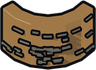

Lumberjacking
Equip an axe and chop trees. Each kind of tree needs a level and gives its own logs; better axes cut faster. Carry Seeds to replant stumps.
Level guide
| Level | Unlock | |
|---|---|---|
| 1 | Chop a tree for Logs | |
| 15 | Chop an oak tree for Oak Logs | |
| 20 |  | Chop a cork oak for Cork |
| 20 | Gather with the Steel Axe (15% faster) | |
| 25 | Chop a birch tree for Birch Logs | |
| 35 | Chop a willow tree for Willow Logs | |
| 35 | Gather with the Gold Axe (30% faster) | |
| 45 | Chop a pine tree for Pine Logs | |
| 55 | Gather with the Titanium Axe (45% faster) | |
| 60 | Chop a yew tree for Yew Logs | |
| 75 | Chop an elder tree for Elder Logs | |
| 75 | Gather with the Star Axe (60% faster) | |
| 85 | Chop a starbark tree for Starbark Logs |